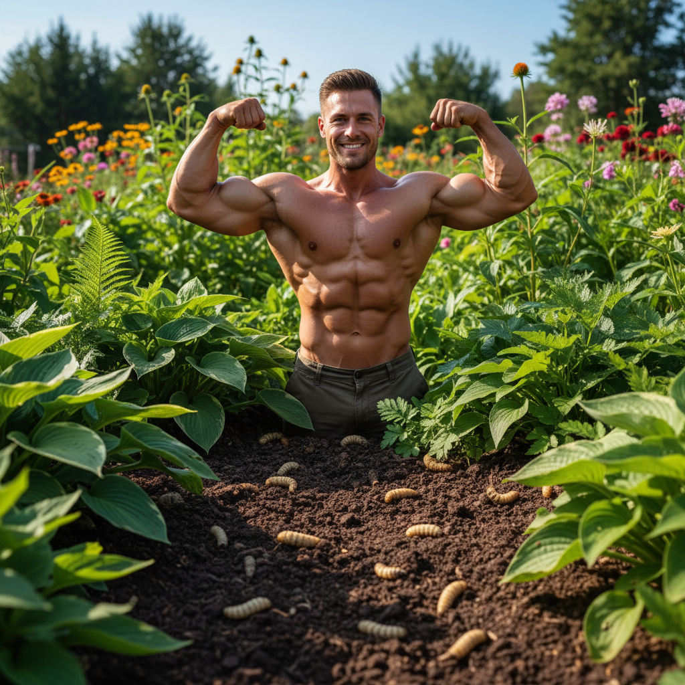
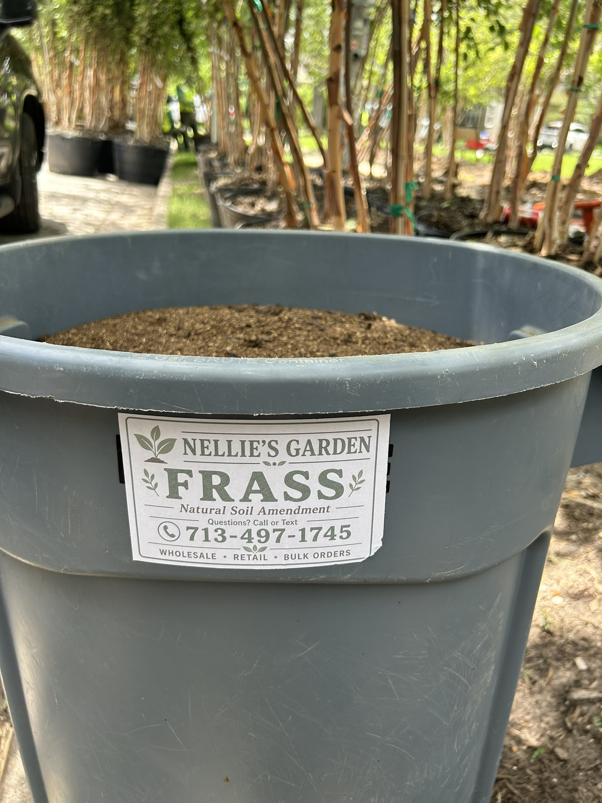
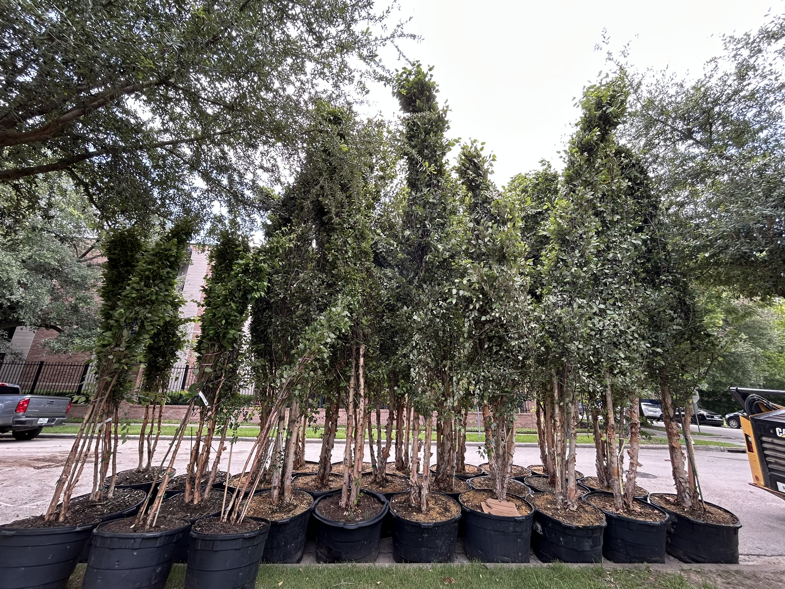
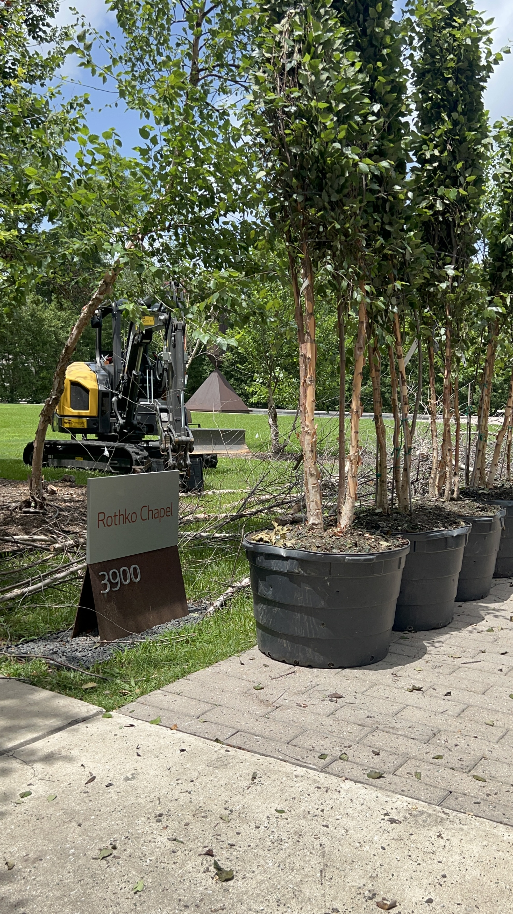
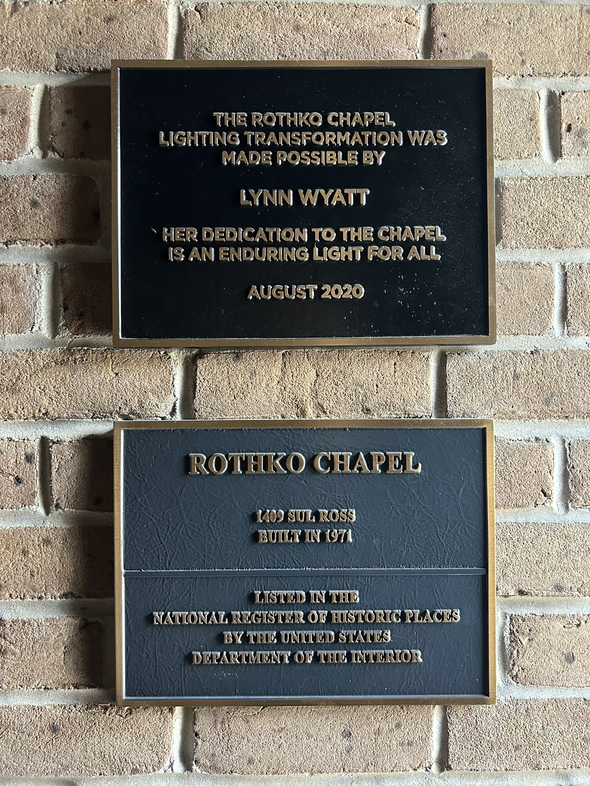
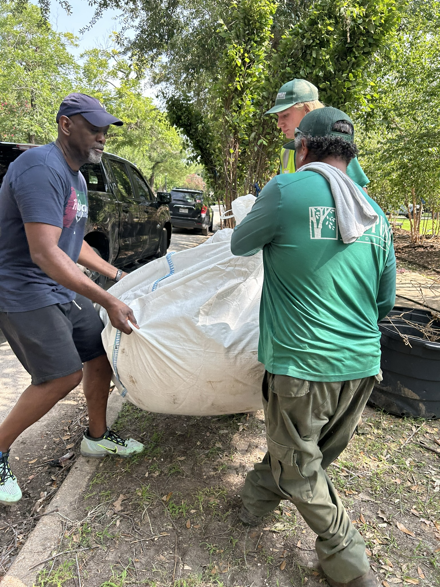
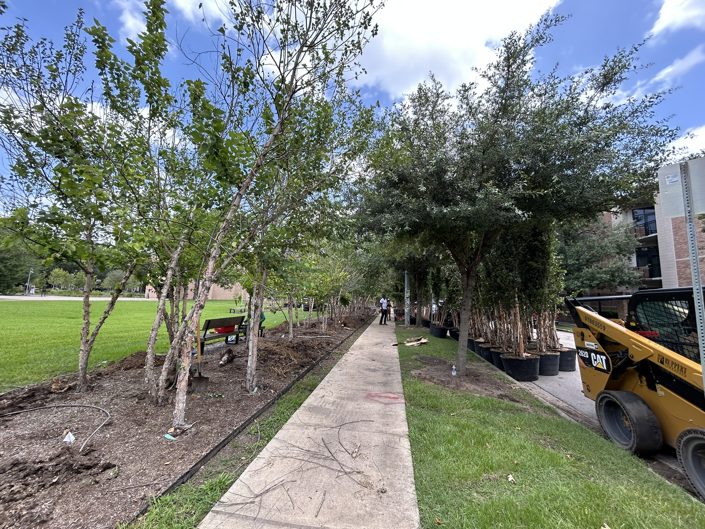
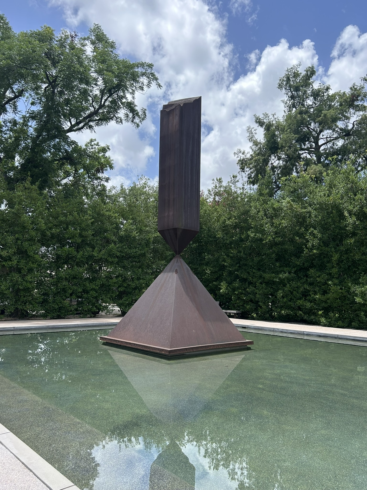
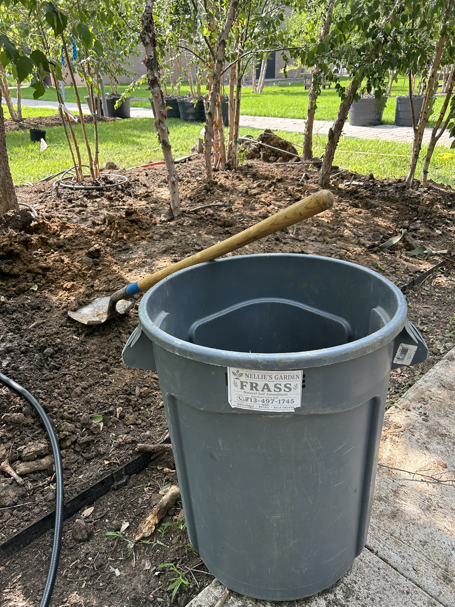

White Eagle Nutrition soil health division
Nellie's Garden helps growers build healthier, more resilient soil with USA-grown BSFL frass.
Nellie's Garden is part of White Eagle Nutrition's circular agriculture platform. White Eagle leads on BSFL animal nutrition, while Nellie's Garden focuses on high-performance soil biology and frass-based fertility for homeowners, gardeners, and commercial landscapes.

Why growers choose Nellie's Garden frass
Our insect frass is a natural fertilizer and soil-building amendment, not just a compost; prior TAMU testing showed 2.9%–3.6% nitrogen, 0.57%–0.99% phosphorus, and 1.91%–2.65% potassium on a dry basis, plus calcium, magnesium, sulfur, zinc, iron, copper, manganese, and boron.
Beyond NPK, BSFL frass naturally contains insect-derived chitin, organic matter, and biologically active material that support soil structure, microbial activity, nutrient cycling, plant vigor, natural fungal resistance and a healthier root-zone environment. Frass also improves moisture retention, a practical benefit for gardens and landscapes exposed to heat and drought stress.
In our company trials with this 2026 batch, we saw strong brown spot repair in turf areas and vigorous tomato plant growth, consistent with frass performing as both a nutrient source and a soil-building input.
What growers can expect from Nellie's Garden frass
Fast microbial activation
Living biology begins colonizing the root zone quickly, helping unlock tied-up nutrients and outcompete soil pathogens.
Steady, gentle feeding
Balanced nutrition supports steady plant growth without the high-burn risk associated with synthetic-heavy fertilizers.
Natural pest and stress resilience
Chitin-linked signaling pathways help plants defend against common pest pressure and environmental stress cycles.
Compost performance boost
Frass can accelerate compost decomposition rates and help finish biologically active compost more consistently.
Lower-waste soil program
Nellie's Garden supports a circular model that transforms local organic byproducts into productive soil amendments.
Scalable for home and commercial use
Programs translate from backyard beds and houseplants to municipal turf, growers, and landscaping operations.
Field observations from our frass programs
Observed water savings in raised-bed contexts.
Root-mass improvement reference in greenhouse trial summaries.
Soil microbial activation signal after application.
Faster compost decomposition rate in referenced study contexts.
Closed-loop insect-input model with upcycled feedstocks.
Lower emissions compared with conventional fertilizer pathways in cited programs.
Field observations and benefit claims are summarized from NelliesGarden.com content, linked references, and company trial notes.
Community support
Proud to support our friends at Rothko Chapel
We are proud to support our friends at the Rothko Chapel by donating 300+ lbs of BSFL frass for their replanting project to replace 70 birch trees.
"To steward a reflective space and present programs that promote spirituality, creativity, dialogue, and action leading to more equitable, empowered, and engaged communities."
Rothko Chapel mission statement








Nellie's Garden and White Eagle Nutrition work as one connected system.
White Eagle Nutrition advances BSFL animal feed, and Nellie's Garden extends that same biology into soil regeneration. Explore Nellie's Garden for deeper research, application guides, and expanded frass programs.